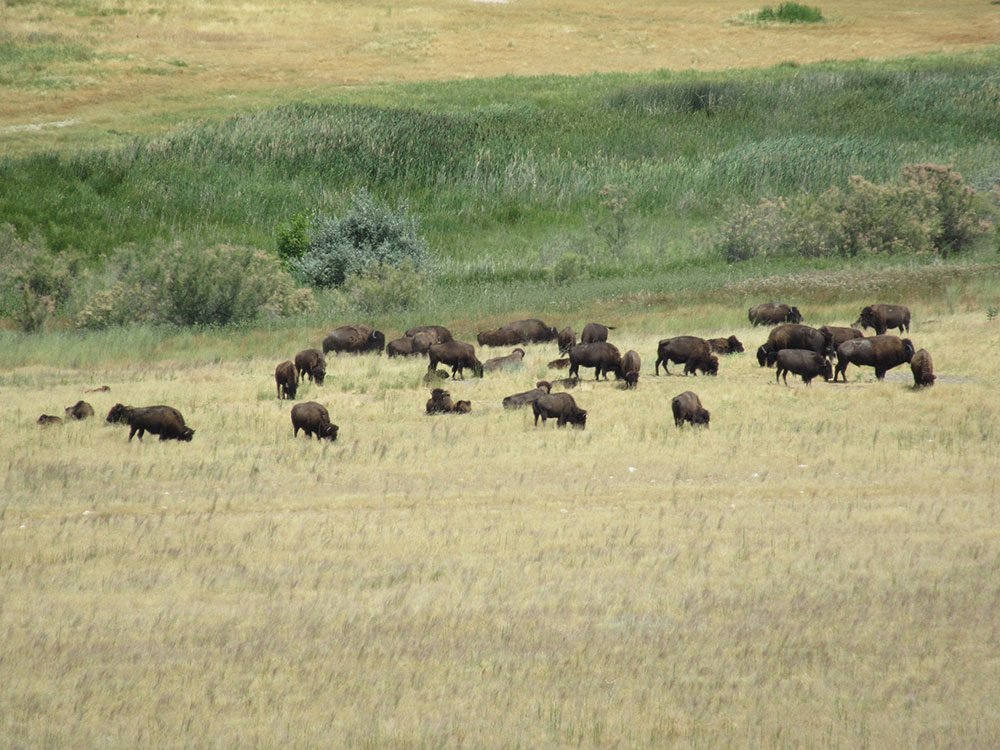
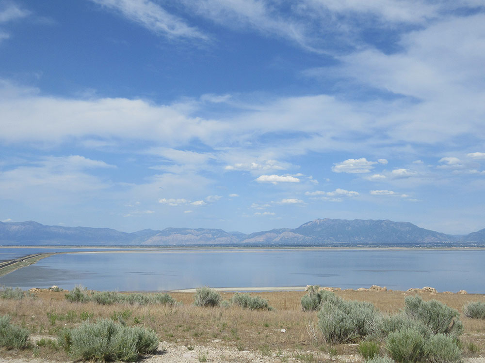
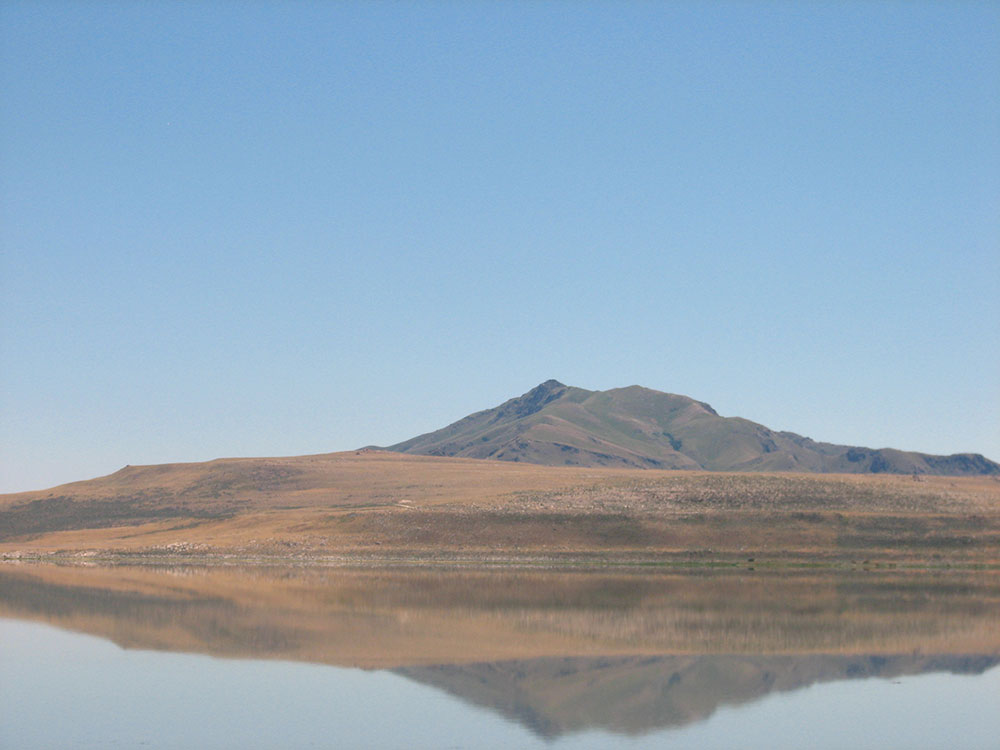
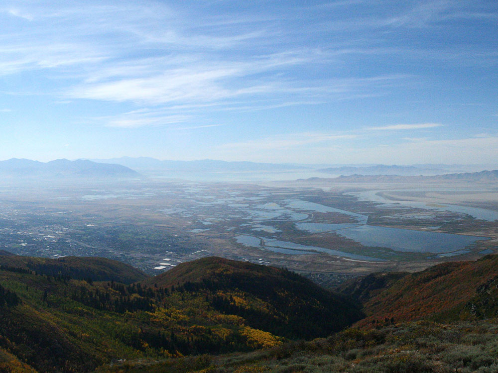
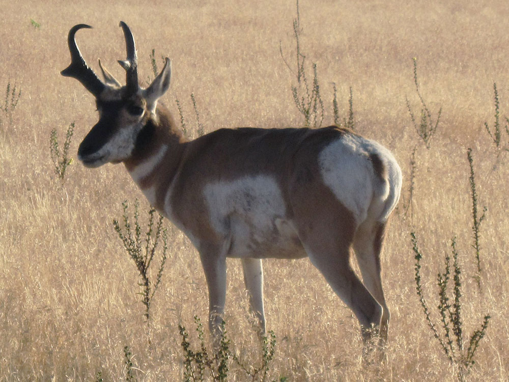
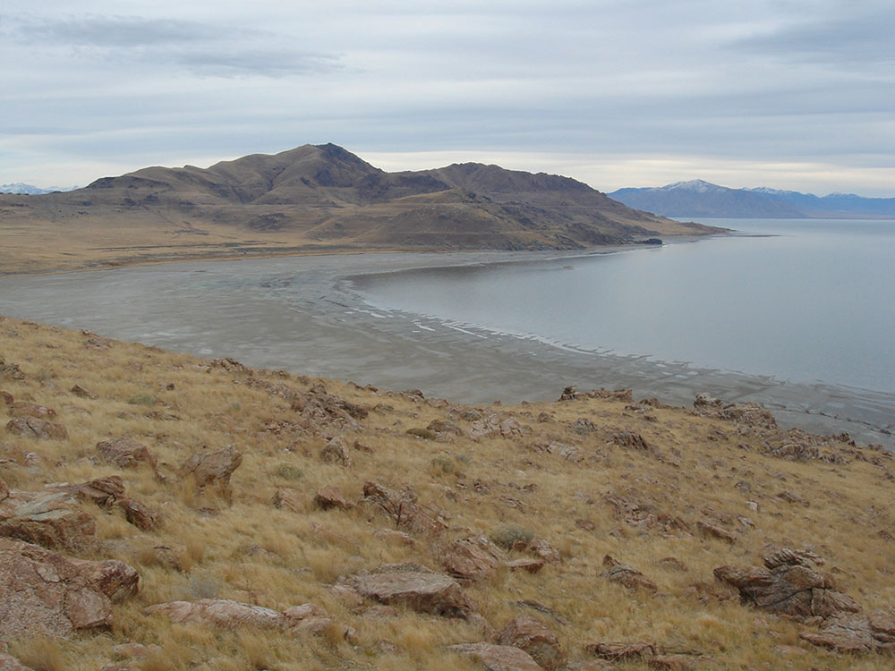

Largest of ten islands located within the Great Salt Lake known for its natural scenic beauty and populations of pronghorn, bighorn sheep, American bison and other wildlife
Closed: Thanksgiving, Christmas
Visitor Center Hours: 9am to 5pm
Fielding Garr Ranch Hours: 9am to 5pm
Senior entrance fee (65 years of age): $10.00 per vehicle up to 8 people
Bicycles, Motorcycles and Pedestrians: $3.00 per person
How to Get There
From Salt Lake City (42 miles): Get on I-15 N. Follow I-15 N to UT-108 N/W 2000 N/Antelope Dr in Layton. Take exit 332 from I-15 N. Follow UT-108 N, W 1700 S and Antelope Island Rd to White Rocks Loop Rd.
Overview
Antelope Island State Park covers most of the 42-square-mile Antelope Island, the largest of the islands in the Great Salt Lake, and is reached by a 7-mile causeway from Syracuse (I-15 exit 332). It is famous for its free-roaming bison herd, which began with twelve animals brought to the island in 1893 and is now one of the oldest and largest herds in the country, along with pronghorn, bighorn sheep and coyotes. The state acquired the northern part of the island in 1969 as Great Salt Lake State Park and added the southern part in 1981, and the park is managed by Utah State Parks. John C. Frémont and Kit Carson were the first non-natives known to visit, in 1845, and the 1848 Fielding Garr Ranch preserves the island’s ranching history. Visitors come for the wildlife, hiking to Frary Peak, floating in the lake at Bridger Bay Beach, and sunsets over the Great Salt Lake.
Highlights
- Buffalo Point and White Rock Bay: the most scenic parts of the northwest island
- Fielding Garr Ranch: the oldest Euro-American building still standing in Utah (1848)
- Bison Roundup: held every autumn, when riders herd the bison
- Bugs: biting gnats can be bad in early summer, so bring repellent
Activities
Antelope Island State Park is open for year-round recreation. It features a marina, beach, campground and hiking trails. Tourists pay a fee to access the park via the islands causeways. The northern 2,000 acres (810 ha) are developed. There are several campsites, a day use area, swimming area, and picnic areas near Bridger Bay on the northwestern end of the island. There is a restaurant on Buffalo Point. The rest of the park is largely undeveloped. A few old roads cross the island and so do some hiking trails. The remnants of old mining claims and the Fielding Garr Ranch are open to park visitors.
Antelope Island is known for its scenic beauty, especially in the northwest quadrant of the island at Buffalo Point and White Rock Bay, where mountains and hills overlook beaches as well as the reflecting waters of the Great Salt Lake and other islands that are visible in the lake. Birdwatching on Antelope Island is popular. Hiking and Cycling are popular activities, but water is scarce and there are few trees on the island. Though not strictly a desert island there are no permanent human inhabitants and conditions are quite dry and can be very hot during the summer. Public beaches, a marina, and overnight camping areas are available and popular on the northern part of the island. Observing wildlife is also popular on Antelope Island, especially the large numbers of bison which are part of the Antelope Island bison herd. Coyotes and antelope are sometimes seen close to the main roads and campsites, and bison often wander across the roads, though the bison are most often found towards the south end of the island near the Fielding Garr Ranch. Other activities on the island include visiting the historic Fielding Garr Ranch, horseback riding and photography.
The Bison Range Ride and Roundup - held every autumn attracts tourists from around the world. Bison are herded from the southern end of the island to holding pens on the northern end of the island.
Wildlife
Antelope Island State Park provides a habitat for a wide variety of wildlife. Despite its name, the park is most famous for its herd of bison. The size of the Antelope Island bison herd ranges from 550 to 700 animals and is controlled by an annual bison round-up. The Antelope Island bison herd is one of the oldest and largest in the United States. The park is also home to jackrabbits, pronghorn, bobcats, mule deer, coyotes, and several species of rodents. The island and Great Salt Lake attract migrating birds. The inland grasslands on the island provide habitat for chukars, burrowing owls, long-billed curlews and several species of birds of prey.
Access
The island lies in the Great Salt Lake northwest of Salt Lake City, about 42 miles from downtown and a half hour from Layton. From I-15, take exit 332 in Syracuse and follow UT-108 west and Antelope Island Road across the 7-mile causeway; the road is paved to the park entrance and the main developed areas. A park entrance fee is collected at the gate, and the park is open daily from 6am to 10pm. The island has few services beyond the visitor center, the Buffalo Point restaurant and gift shop and basic restrooms, and water is scarce, so bring drinking water for hikes. There is no public transportation and rideshare services such as Uber and Lyft do not pick up from the park, so a car is needed. Low lake levels have closed the main boat ramp at times.
Seasons
The park is open year-round, with each season offering something different. Spring brings green hills, wildflowers and newborn bison and pronghorn, while summer is hot and dry with little shade, and biting gnats can be bothersome in early summer, so bring repellent. Fall is a favorite time for the Bison Range Ride and Roundup, held each autumn, when cooler weather makes hiking comfortable and the lake reflects bright sunsets. Winter is cold and quiet, with fewer visitors, and the island’s trails are open for hiking and wildlife watching, although snow and ice can affect the higher routes. The park is closed on Thanksgiving and Christmas.
Things to Do
Explore the Largest Island in the Great Salt Lake
Antelope Island State Park is Utah's most visited state park and the largest island in the Great Salt Lake. Located northwest of Salt Lake City, the island is known for its sweeping lake views, unique wildlife, rugged mountains, and opportunities for hiking, biking, photography, and outdoor recreation in a one-of-a-kind landscape.
See the Famous Free-Roaming Bison Herd
Antelope Island is home to one of the largest publicly owned bison herds in the United States. Visitors frequently encounter bison, pronghorn antelope, mule deer, bighorn sheep, coyotes, and numerous bird species while exploring the island's roads and trails.
Enjoy Great Salt Lake Beaches
The island provides access to several shoreline areas where visitors can experience the unique waters of the Great Salt Lake. The lake's high salinity allows swimmers to float easily, creating an experience similar to that of the Dead Sea.
Visit the Fielding Garr Ranch
Established in the nineteenth century, the historic Fielding Garr Ranch is one of the oldest continuously operating ranches in Utah. Visitors can tour preserved buildings, learn about pioneer life, and explore exhibits detailing the island's ranching history.
Enjoy Scenic Drives and Sunset Views
The island's scenic roads provide access to overlooks, beaches, mountain viewpoints, and recreation areas. Sunrise and sunset are especially popular times to visit, as the Great Salt Lake reflects vibrant colors across the surrounding landscape and mountains.
Top Trails
Frary Peak Trail
Length: Approximately 7 miles round trip
Elevation Gain: Approximately 2,100 feet
Difficulty: Strenuous
The highest point on Antelope Island, Frary Peak rewards hikers with panoramic views of the Great Salt Lake, Wasatch Mountains, and surrounding desert landscape. It is considered one of the best hikes in northern Utah.
Buffalo Point Trail
Length: Approximately 1 mile round trip
Elevation Gain: Approximately 250 feet
Difficulty: Easy
This short and family-friendly trail leads to a scenic overlook above the lake. The route offers exceptional views and is a popular destination for sunrise and sunset photography.
White Rock Bay Trail
Length: Approximately 7 miles round trip
Elevation Gain: Moderate
Difficulty: Moderate
Following the island's western side, this trail provides scenic lake views, wildlife viewing opportunities, and a quieter hiking experience away from the park's busiest areas.
Sentry Loop Trail
Length: Approximately 5 miles loop
Elevation Gain: Approximately 700 feet
Difficulty: Moderate
One of the island's most popular loop hikes, this trail traverses rolling hills and open terrain while offering excellent opportunities to observe bison, antelope, birds, and panoramic views of the Great Salt Lake.
Visitor Centers
The park’s visitor center is open daily from 9am to 5pm and is the best first stop, with exhibits on the island’s wildlife and history, maps, trail and bison-viewing information, and staff who can advise on conditions. The Fielding Garr Ranch on the south end of the island has its own small museum and exhibit, open daily, and self-guided visits are possible at other times. Buffalo Point has a gift shop and a small restaurant with views of the lake. Phone the park at 801-725-9263 for current conditions.
Camping and Lodging
The park offers primitive campsites and also lists cottage, RV and tent-pad options, with the main camping area near Bridger Bay on the northwest end of the island. Reservations are made through Utah State Parks, and sites are in demand in the busy seasons. Hotels and motels are plentiful in nearby Layton, about 16 miles away, as well as in Clearfield, Syracuse and Ogden, all within about 30 to 45 minutes. Salt Lake City, roughly an hour from the park, has the widest range of lodging, and Park City and other Wasatch resorts are within about an hour and a half.
This article uses material from the Wikipedia article and official pages for stateparks.utah.gov, visitutah.com, alltrails.com, Antelope Island, released under the Creative Commons Attribution-Share-Alike License 3.0. Additional information from Utah State Parks.










